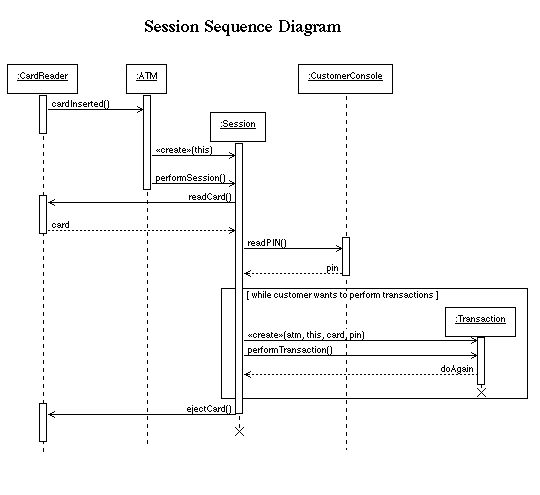

![[ Interaction for system startup ]](StartupInteraction.gif)
![[ Interaction for system shutdown ]](ShutdownInteraction.gif)

![[ Interaction for a transaction ]](TransactionInteraction.gif)
![[ Interaction for specifics of a transfer transaction ]](TransferInteraction.gif)
![[ Interaction for specifics of an inquiry transaction ]](InquiryInteraction.gif)
![[ Interaction for invalid PIN extension ]](InvalidPINInteraction.gif)
UML defines two types of Interaction Diagram: the Sequence Diagram and the Collaboration Diagram. In order to illustrate both types, the major use cases are documented using Sequence Diagrams, and the specific subcases of transaction (withdrawal, etc.) and the Invalid PIN Extension are documented using Collaboration Diagrams. (The major reason for using two different types of diagram is pedagogical - to illustrate each type.)


Page of links for non frames-enabled browsers.